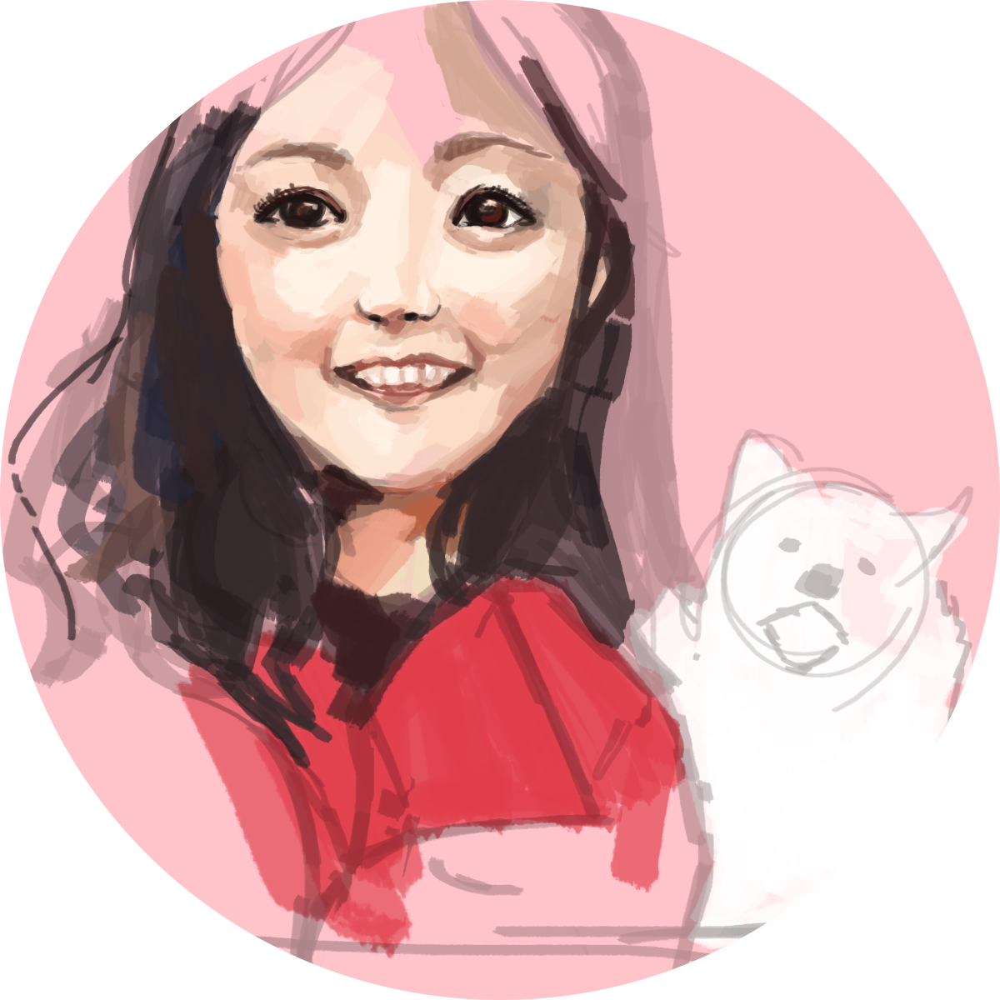

|

AMY |
DARYL |
|---|---|
|
this is a magic cat /\ / \ .∧＿∧ ( ･ω･｡)つ━☆・*。 ⊂ ノ ・゜+. しーＪ °。+ *´¨) .· ´¸.·*´¨) ¸.·*¨) (¸.·´ (¸.·'* ☆ send this to 10 friends, and you will ace your finals |
Daryl is a game designer and roboticist. He loves creating seamless experiences. He’s worked at Snap, Google X, Tesla, Adventure Cow, and others. |